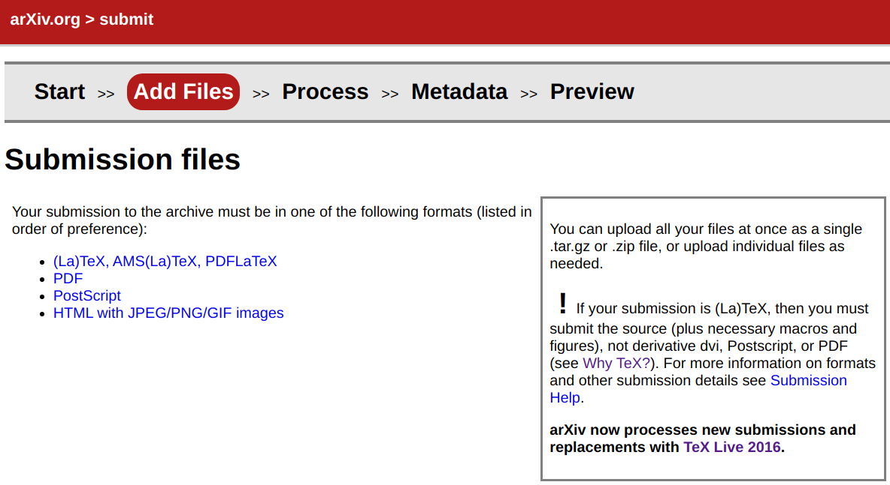

Submit to arXiv¶
Second Submit¶
Info
Post: 2021-10-07 19:37:58
版本更新到了 TexLive 2020，继续使用 makisyu/texlive-2016 反而不行，好在 T460P 上已经装好了 2020 版本的。所以先通过 xelatex + biber 编译得到 .bbl 文件，然后连同其他源文件一起上传。
Warning
可能因为是 Windows 服务器，文件名不支持时间戳中的 :，所以需要修改文件。
First Submit¶
Info
Post: 2020.08.10
记录下提交 tex 源文件到 arXiv 上踩过的坑。
首先，在 Add Files 说提交的文件可以是 tex 或 pdf，

因为老板说先不把 appendix 放进去，所以在本地生成好 pdf 文件，然后按照下列命令
$ pdftk full-pdf.pdf cat 1-30 output outfile.pdf
进行剪切，再上传，然后大概说这不是 tex 产生的文件，并且说 partially rejected 之类的，不能进行下去了。本以为可能是剪切的原因。后来本地手动把 appendix tex 去掉，编译生成新的 pdf，再进行上传，还是说 partially rejected 之类的。所以大概还真的如网友所说的，只能传 tex 吧。只是如果这样，干嘛要写其它可能性？！
后面就乖乖传 tex，然而 arxiv 支持的版本只有 TeXLive2016，而且竟然要自己上传 biber 编译好的 .bbl 文件，所以第一次报出的错误是版本不匹配，说期待 biber 2.8，而我本地上次更新装了 TeXLive 2020，其中 biber 是 2.14。后来翻了几个服务器，要么根本不是装的 texlive，要么是我后来手动装的 TeXLive 2018。而装一个 texlive 的时间令人难以忘记，即便现在网速比较好，也不容乐观，而且发现存有旧版本 texlive 的镜像似乎只有 US、FR 等地孤零零的那几个，而不像最新版本那样世界各地都有镜像，估摸着网速不会怎么样。
首先想试试能不能直接降低 biber 的版本，也确实可以直接从 github 单独安装 biber，然而一开始从 SourceForge 下载了 .tar.gz 的源文件，下载之后 bin/biber 并用不了，且报错，
Can’t locate Biber.pm in @INC
可以在 github 上找到类似的问题，plk/biber #214，似乎是没有编译，但是自己运行一遍 perl Build.PL，还是有错误。后来意识到自己下载的不是 binary 版本，于是试了试已经编译好的 biber，可以运行 biber -v，但是编译文件时，报出新错误说 biblatex 的版本不匹配。这样搞下去不是个事儿，还是得装个 texlive 2016.
正当一筹莫展的时候，看见了 docker 版本的 texlive 2016！这可是一个神器，根据少数不多的几个经历，这个速度非常快。
$ docker pull makisyu/texlive-2016
事实证明也确实如此，一两分钟就下好了，后面速度变慢是因为磁盘快满了，删文件的速度都比不上下载的速度，磁盘快满了，然后直接卡掉了，然而这时也快下载完了，本以为功亏一篑的时候，系统弹出窗口说，磁盘空间不够了，是否清理垃圾箱，一点清理，多出了 2,3 G 的空间，最近一直都没清理垃圾箱了，瞬间把我救了回来。
书到用时方恨少，觉得之前没有好好整理 docker 的用法，首先运行命令为
$ docker run --rm --volume $PWD:/workdir --workdir /workdir makisyu/texlive-2016 pdflatex main.tex
踩了一些坑，才明白
$PWD:/workdir表示文件夹映射，当前所在文件夹$PWD映射到 docker 中的workdir
而查看生成的文件需要进入 docker，
$ docker run -i -t --rm --volume $PWD:/workdir --workdir /workdir --user 1001:1001 makisyu/texlive-2016 /usr/bin/bash
另外还有一个很关键的点，怎么把生成的文件导出来，
$ docker cp <containerId>:/file/path/within/container /host/path/target
其中 <containerId> 并不是 makisyu/texlive-2016，而是通过
$ docker container ls
查看到的，这里注意不要复制到映射的文件里面，不然会出现无限递归。
当然事情并没有到此结束，首先发现 biber 的版本是 2.7，隐隐有点担心，但感觉问题应该不大。所以继续编译，然后用此版本的 biber 编译时才发现 .bib 文件中有很多非 ascii 码，这些会被转化成 \x{...} 的形式，继续 pdflatex 编译时便会报错，一开始报出 mathbf only in math mode 的错误时，还一头雾水，咋跟 mathbf 有关，后来才意识到自己重定义了 \x 为 \mathbf{x}，也顺藤摸瓜才发现非 ascii 码被转换成了 \x{...}。
本以为非 ascii 码是因为英文字母顶上的帽子带来的，但是根据这个列表修改了其中一条文献后，才发现自己想太简单了，仍然会报出该条文献有非 ascii 码。后来才意识到最简单的方法是直接在 docker 里面打开 .bib，这个最好必须在 docker 中打开，似乎因为我本地语言环境可能不会正常展示非 ascii 字符，因为默认支持了 UTF8，除非在 vim 中用 /[^\x00-\x7F] 把 non-ascii 高亮出来，这才发现很多字母真的并不是正常的英文字母，比如 efficient 并不是 efficient，诸如此类的还有很多。这些一般都是 abstract 里面的内容，因为从 zotero 导出参考文献时会包含 abstract。大胆猜一下原因，可能是因为 zotero 采用 ocr 等技术识别，然后出现了偏差？！看来新版本的 texlive 容错性更强，不过我感觉主要是语言支持的问题。
替换所有的 ascii 还是花了一番功夫的，当然简单粗暴的是先把 abstract 删掉，然后再慢慢替换，后面解决掉肉眼可见的非 ascii 字符后，还是有问题，直接在 .bbl 文件中搜索 \x，不过注意到 \ 需要转义，所以搜索命令为 /\\x，把这一切都替换掉，终于能够成功编译了。
后面就再上传至 arxiv，这次一下通过了，之前 biber2.7 的顾虑也被打消了。
本来以为就一个点击上传的事儿，没想到折腾了一早上。